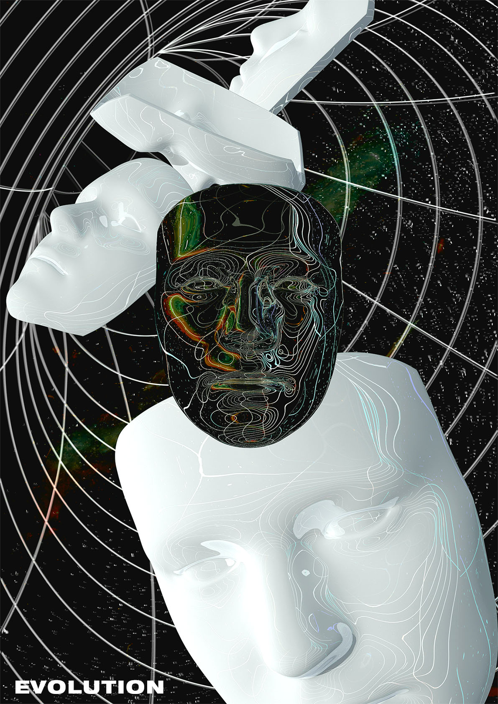

DESIGNERS
[디자이너]
TEAM PROJECT
[팀 프로젝트]
ABOUT
[어바웃]
YOUTUBE
[유튜브]
PNU DT 22.11.04 - 22.11.06
DESIGNERS
[디자이너]
정재헌
Jeong Jae Heon
wogjs980@naver.com
CONCEPT
적응
사람은 각자 원치 않는 상황이나 조건에 맞추려고 한다. 그 상황이나 조건에 적응하기 위해 거기에 알맞은 페르소나를 가지고 보여준다. 스스로의 페르소나를 변화시키면서 누군가를 만나거나 어떤 장소를 갈 때 우리는 여러 가지 상황에 조화롭고 적응된 페르소나를 보여주게 된다.
POSTER
PUNDTPERSONALNO. 1
concept
진화
생명체들을 보면 자신이 살아 남기위해서 나 대를 잇기 위해 환경과 상황에 맞춰서 적응하고 진화하게 된다. 페르소나도 상황과 조건에 맞게 적응하다 보면 원래의 모습에서 더 진화하게 된다. 시간이 지나면 지날수록 점점 진화하는 페르소나 가면의 모습이다.

INTERACTIONART
PUNDTPERSONALNO. 2
concept
스며들다
살아가면서 순간순간의 상황에 우리는 적응하기 위해 자연스럽게 스며든다. 시간이 지날수록 물 흐르듯이 스며들며 우리는 적응하게 된다.
1. 화면이 나타난다.
2. 화면에 사람이 나타난다.
3. 시간이 지난후 배경과 사람이 하나가 된다.